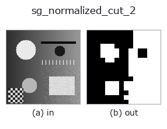

segment op• データ種: image → region
• 呼び出し: fullseye.apply(img, "sg_normalized_cut_2", a=0.5, b=0.5) (2-D は 1 画像 + 2 スカラつまみ a,b∈[0,1] のモデル)

*図は合成の入力 128×128 で実際に走らせた出力。左が入力、右が出力。点群は上から見た散布(明るさ = z)、1-D 列は折れ線、体積は z 方向の最大値投影、動画は中央フレーム、複素画像は振幅、絵にならない返り値は値そのもの。*
つまみ a を振る(0.1 / 0.5 / 0.9、もう一方は既定):
▸ sg_normalized_cut_2: knob a sweep (docs site)
つまみ b を振る(0.1 / 0.5 / 0.9、もう一方は既定):
▸ sg_normalized_cut_2: knob b sweep (docs site)
別の画像でも(合成シーン / 写真 / 硬貨。上段が入力、下段がその出力。つまみは既定):
▸ sg_normalized_cut_2: other inputs (docs site)
*4 列目はカラー (H,W,3) の入力。この op は色を跨がずに扱える(色チャネルを 3 本目の空間軸として畳み込まない)。*
輝度グラフの正規化カット（スペクトラル 2 分割、Shi & Malik）で画像を明暗 2 領域に分ける（HALCON に対応オペレータなし）。
計算量を抑えるため画像を `sdim = round(10+b*14) 程度まで間引いてから、輝度差と距離で重みを決めたアフィニティグラフを作り、一般化固有値問題 (D-W)y = lambda*D*y の第 2 固有ベクトル（Fiedler ベクトル）を中央値でしきい値化して 2 群に分ける。a（0〜1）は輝度方向の帯域幅sig_i = 0.05 + a*0.5 を振り、b`（0〜1）は間引きの解像度を振る。明るい方の群を最近傍で元解像度に拡大して region として返す。
• gallery2d_segmentation ファミリ ガイド
• サンプルデータ カタログ(DL URL / ライセンス) — 2-D は skimage.data(BSD/public)+ 合成、3-D は実データ源(Stanford/PDS 等)の DL URL。
• 演算子の来歴・参考文献 — この op 族の元になった研究/手法の出典。
• アルゴリズムの正典(著者・年)と用途は上記ファミリ使い方ガイドに記載。
下のプログラムは実際に走ることを確かめてある(図と同じ入力)。Studio のヘルプではこのブロックがボタンになり、その場で読み込んで実行できる。
sg_normalized_cut_2 0.50 0.50
▸ Load this pipeline · Load & run
• gallery2d_segmentation — py -3.11 examples/gallery2d_segmentation.py
region を入力に取れる)identity · reg_erode · reg_dilate · reg_open · reg_close · fill_holes · select_largest · remove_small
segment)sg_slic_superpixels · sg_felzenszwalb · sg_gmm_segment · sg_kmeans_intensity · sg_region_growing_seeded · sg_watershed_gradient
*Provenance: ops.py — 2D operator registry. この per-op ノートは tools/opdocs.py md が自動生成(手編集しない)。*
© 2026 Kazufumi Furuse — Fullseye operator documentation. Licensed under Apache-2.0.
{kind=link}
{kind=link}
{kind=link}